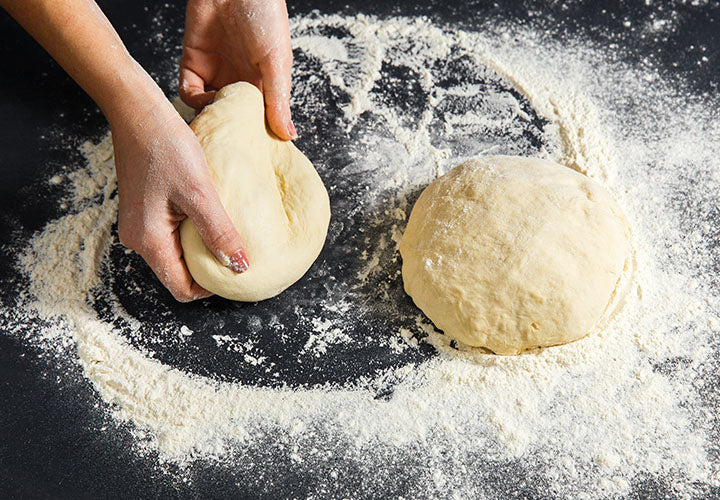
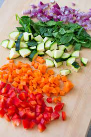
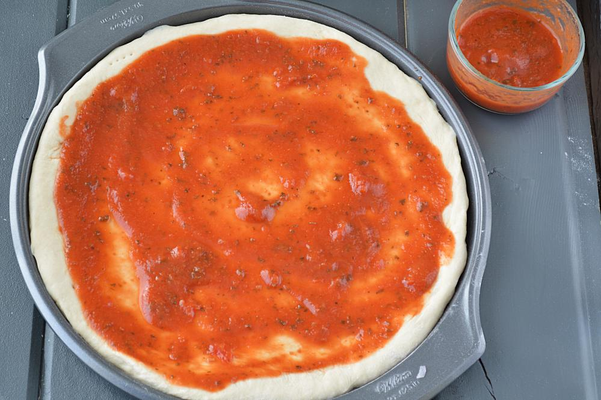

Be it any occasion, we all love to eat pizza at home. But, what goes behind making this delicious dish? Well,
learn all about making a delicious
pizza at home with this easy recipe that will take you through
detailed steps
some tips that will guide you in preparing a Pizza at home.
Take a dough kneading plate and add all-purpose flour to it. Next, add salt and baking powder in it and sieve the flour once. Then, make a well in the centre and add 1 teaspoon of oil to it. On the other hand, take a little warm water and mix the yeast in it along with 1 teaspoon of sugar. Mix well and keep aside for 10-15 minutes. The yeast will rise in the meantime. Once the yeast has risen, add it to the flour knead the dough nicely using some water. Keep this dough aside for 4-6 hours. Then knead the dough once again. Now, the pizza dough is ready.
Preheat the oven at 180 degree Celsius. Now, is the time to make the pizza base when the dough is ready. Dust the space a little using dry flour and take a large amount of the pizza dough. Using a rolling pin, roll this dough into a nice circular base. (Note: Make sure that the circular base is even at all ends.) Once you have made the base, use a fork and prick the base with it so that the base doesn't rise and gets baked nicely. Put it into the preheated oven and bake it 10 minutes. Now, your pizza base is ready.

Now, wash the capsicum and slice it thinly in a bowl. Then, peel the onions and cut thin slices of it as well in another bowl. And finally, cut tomatoes and mushrooms in the same manner. However, make sure that those tomatoes have less juice in them. Once all the veggies are done, Now, grate the processed and mozzarella cheese in separate bowls.
Then, take the fresh pizza base and apply tomato ketchup all over. Spread half the processed cheese all over the base and evenly put the veggies all across the base. Once you have put all the veggies, put a thick layer of mozzarella cheese.
Put this pizza base in a baking tray and place it inside the oven. Let the pizza bake 10 minutes at 250 degree Celsius. Once done, take out the baking tray and slice the pizza. Sprinkle oregano and chilli flakes as per your taste and serve hot. (Note: Make sure that the oven is preheated at 250 degree Celsius for 5 minutes at least.)